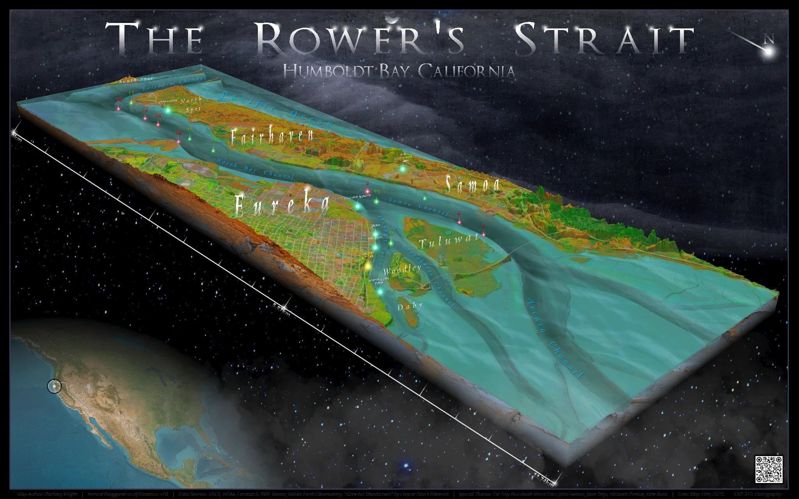

3D cartography
Rower’s Strait
Humboldt Bay, California
Featured in Humboldt Geographic magazine
About this map
An oblique 3D depiction of Humboldt Bay, combining bathymetry, coastal terrain, navigation features, and regional labels. The map appeared in the cartography-focused Humboldt Geographic special edition and was credited in Cal Poly Humboldt’s November 2025 story about the publication.